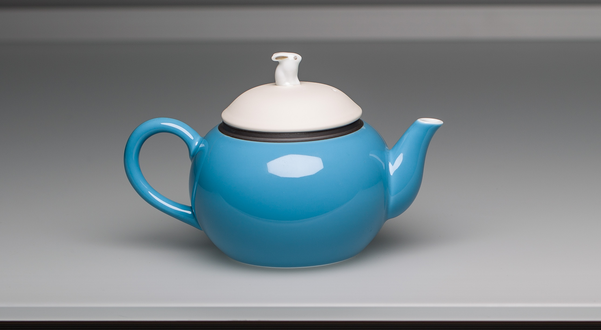
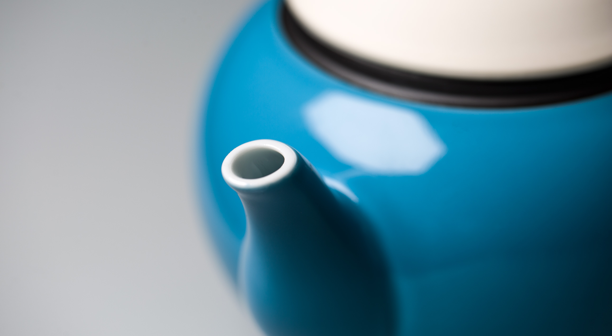
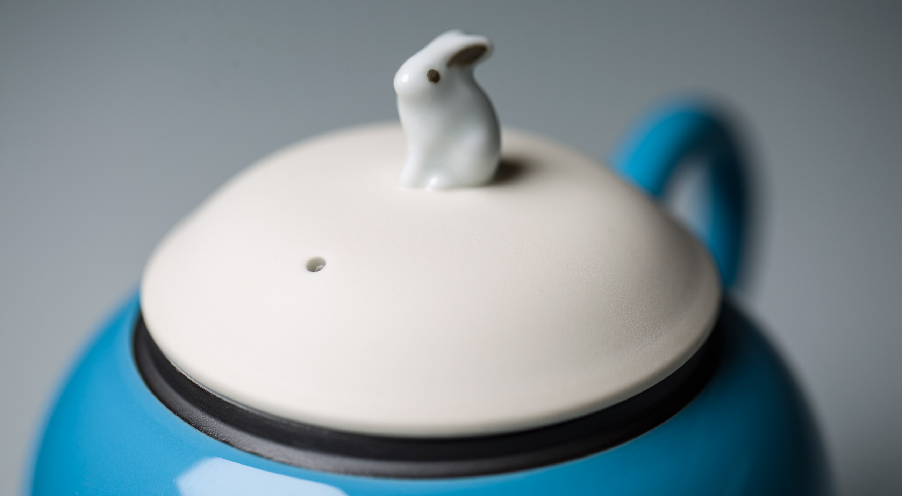
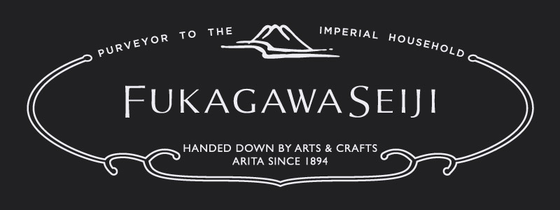
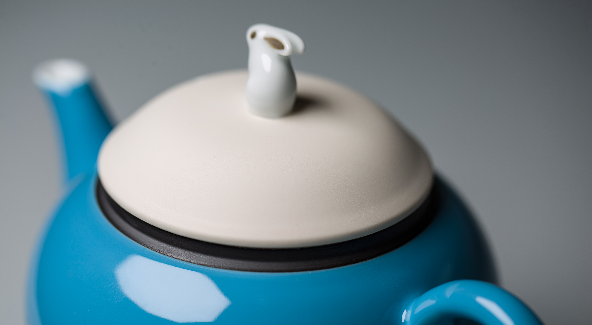

Фарфоровый чайник BORK HK702
Коллекция фарфора FUKAGAWA SEIJI для BORK, это выражение традиционного японского ремесла воплощенная в современном исполнении. Каждый предмет коллекции — это произведение искусства, созданное вручную мастерами, передающими свой опыт из поколения в поколение.
История марки
Керамическое производство из Японии, Фукагава Сейджи (Fukagawa Seiji), как и первый японский фарфор - родом из региона Арита (там раньше всего в Японии была обнаружена белая глина, из которой путём высокотемпературного обжига получался фарфор).
Фукагава - это, в первую очередь, название местности в регионе Арита, затем - фамилия династии фарфоровых дел мастеров, торговая марка и название завода.
Предприятие Fukagawa Seiji было основано в 1894 году Чудзи Фукагавой (Chuji Fukagawa). Это начинание стало продолжением традиций семьи Фукагава, берущих начало в XVIII веке. Компания создавалась как экспортёр фарфора в Европу и Америку и со временем стала крайне популярной за океаном. Так, в 1900 году, двухметровая ваза, произведённая в печи Чудзи Фукагавы, вызвала большой ажиотаж и завоевала золотую медаль на Парижской Международной Выставке во Франции.
В 1910 году Фукагава Сейджи становится официальным поставщиком Японского императорского двора.
И по сей день некоторые работы мастеров этой фабрики выставлены в музеях Европы и Америки. Печи, разработанные по технологии Чудзи Фукагавы, заложены не только в Японии, но и в по всему миру, последняя была открыта в Милане.
Логотипом, которым помечались изделия Чудзи Фукагавы, было выбрано символическое изображение горы Фудзи, которую огибал порыв ветра. К изображению часто добавлялись иероглифы, менявшиеся со временем.
Чайник объемом 400 мл. яркого голубого цвета изготовлены из японского фарфора.
Уникальные творения идеально дополняют современную чайную церемонию и являются предметом гордости многих коллекционеров и музеев мира.
Среди ценителей чая фарфоровые чайники считаются лучшими. Легкий звенящий материал быстро нагревается и прекрасно удерживает температуру заварки все время чаепития. Более всего фарфор подходит для заваривания черных чаев.
Фарфор нейтральный материал, он не впитывает запахи и легко моется.